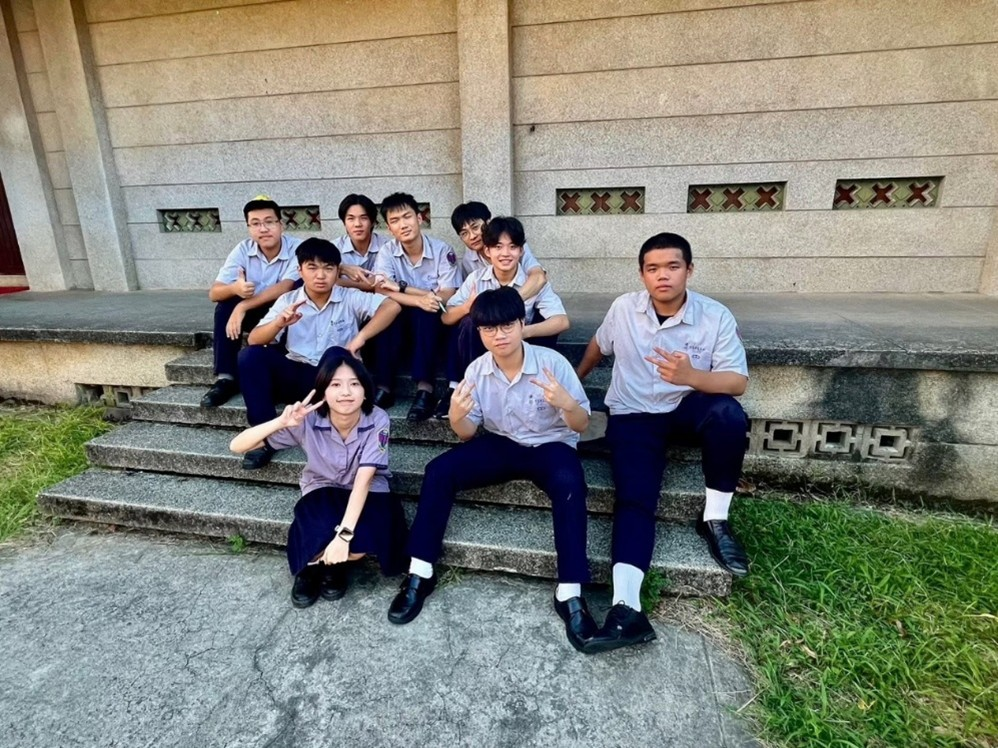
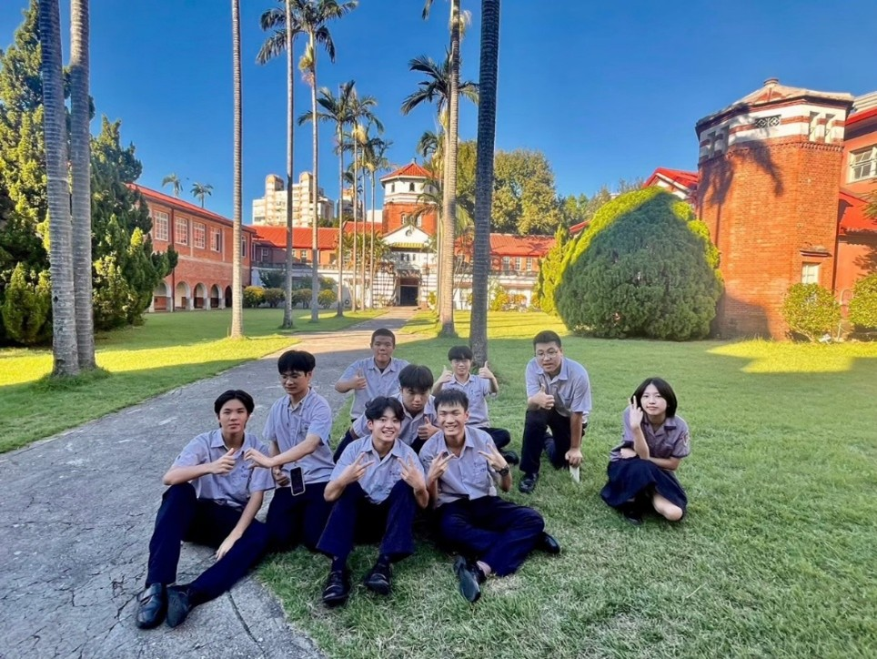
2025年9月19號，我們第一次採訪校友會理事長紀文豪，那次其實事前準備不是很充足，所以那時因為攝像頭的問題拖延了快一小時。但在我們開始訪問理事長時，不管之前的錯誤，我們都樂在其中的聽著他的人生故事，我們從紀文豪的談話中，學到了堅忍、包容、溝通是他人生中領悟到的重要道理。
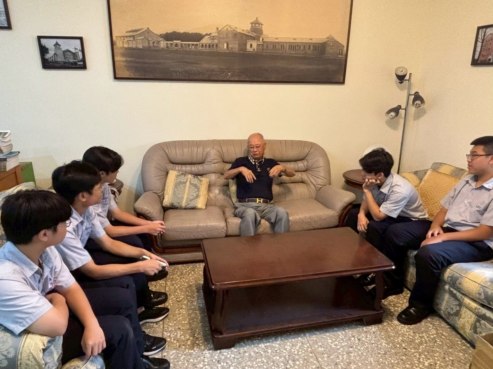
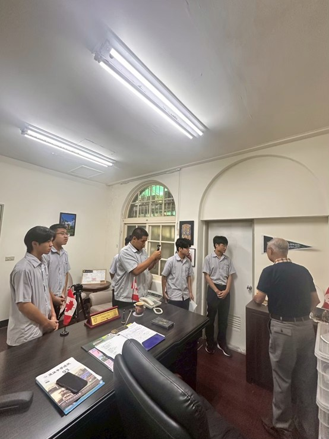
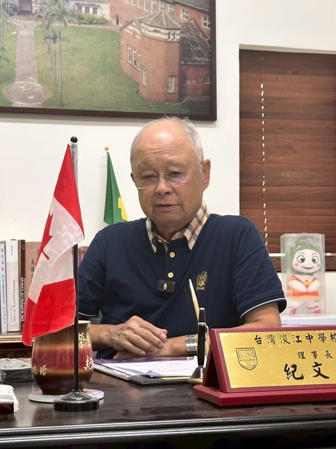
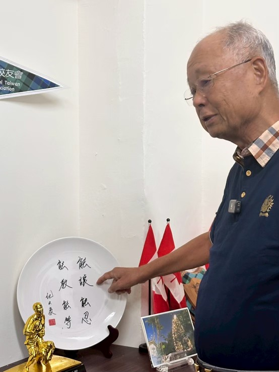
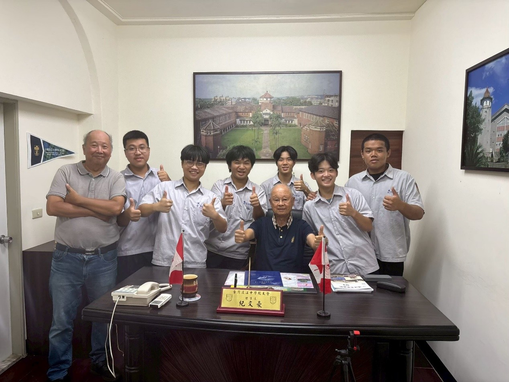
2025年10月2號，這次我們記起上次的經驗，完全準備了事前工作。很快的進入訪談階段，這次訪問是不同人去採訪記文豪理事長，讓他們也得到採訪的經驗。這時我們已經跟理事長建立起友好的關係，還說下次要請我們吃阿給呢。
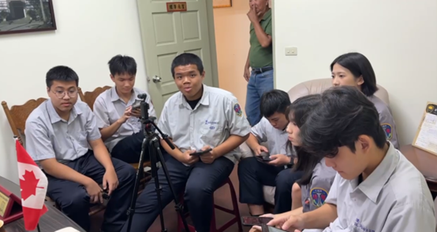
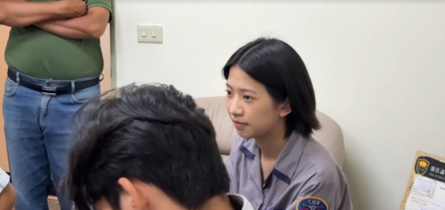
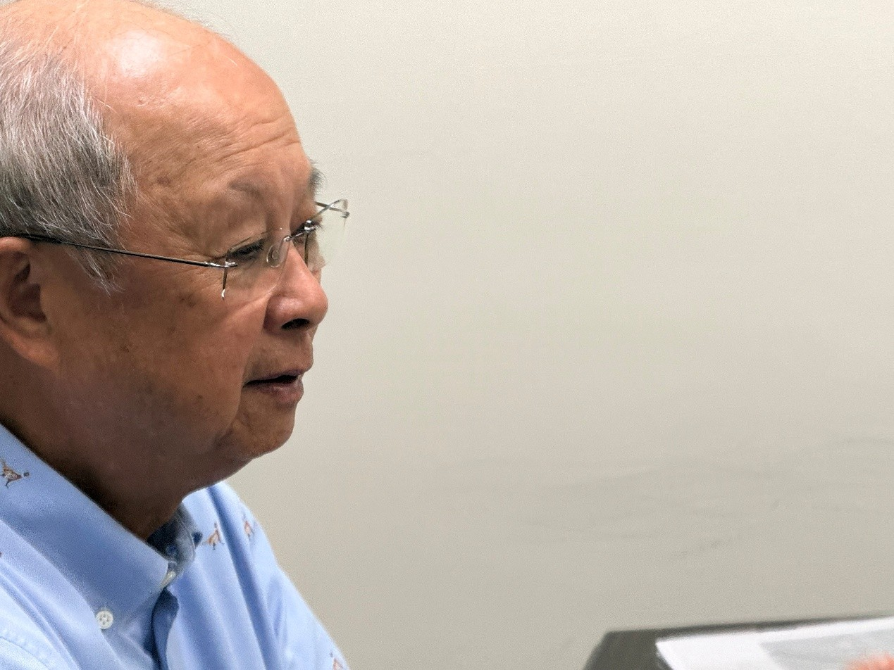
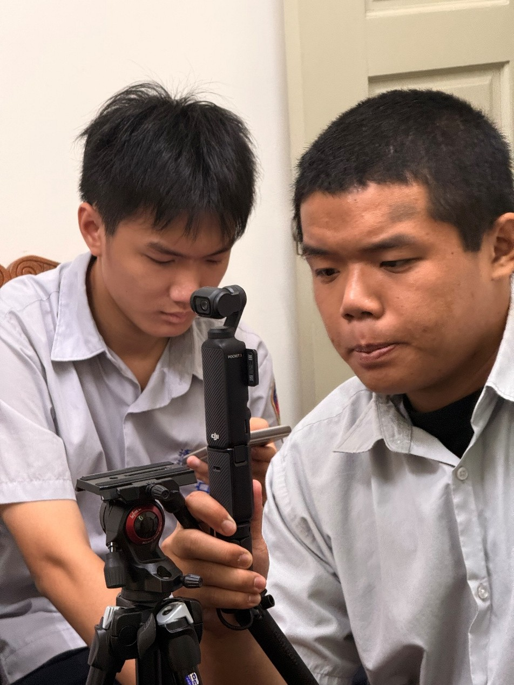
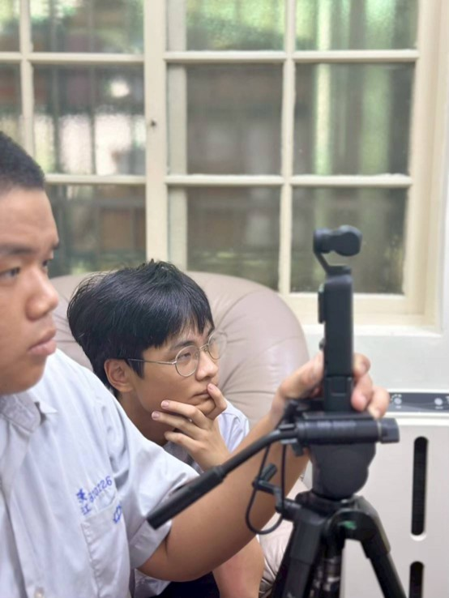
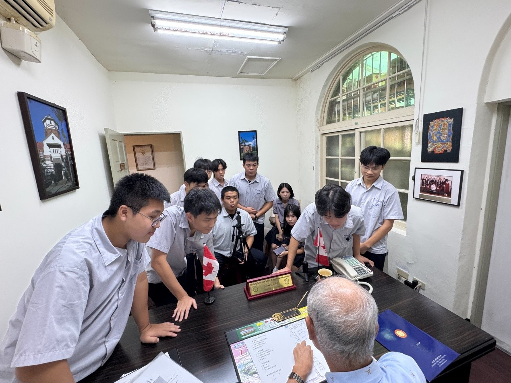
2025年12月23號，這次不同以往，我們到了紅樹林站前的台綜院大樓，是理事長平常的辦公處，見識了什麼叫事業有成的裝潢，品味實在好。這次不僅收穫了理事長在國外深造與當地官員交情的故事，也更了解理事長是怎麼秉持著堅忍、包容、溝通的人生道理去生活、工作或是人情事故。
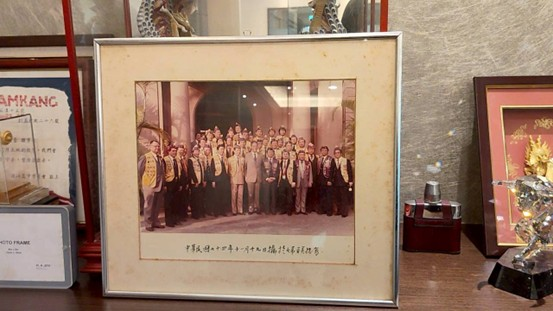
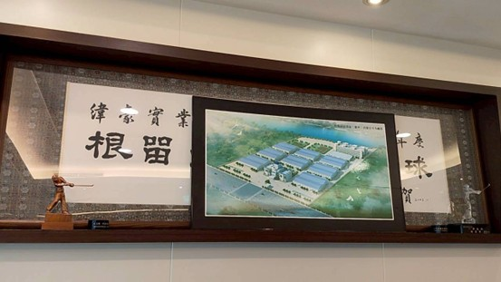
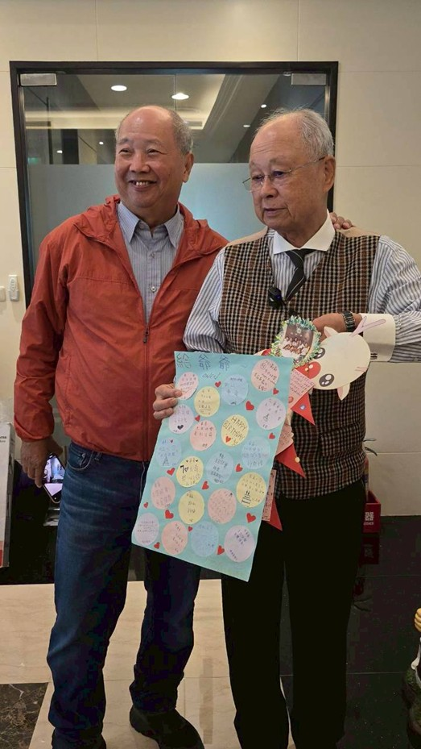
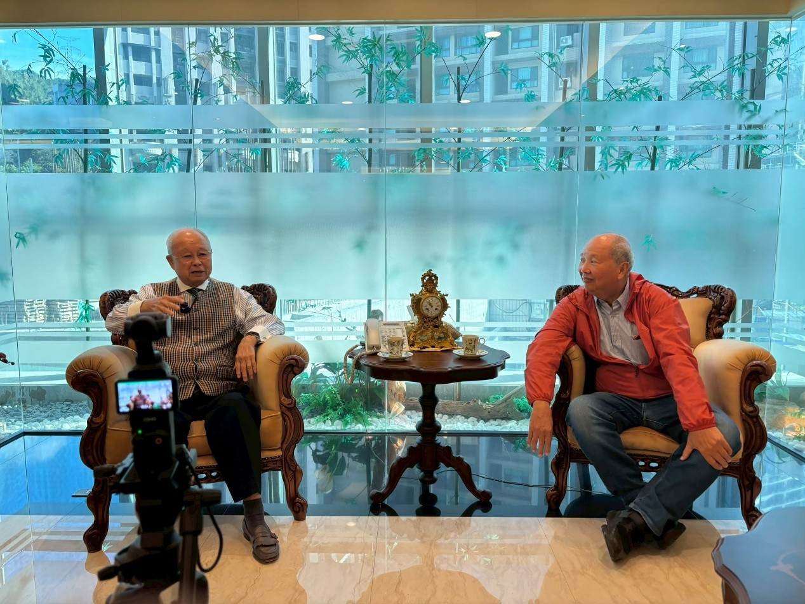
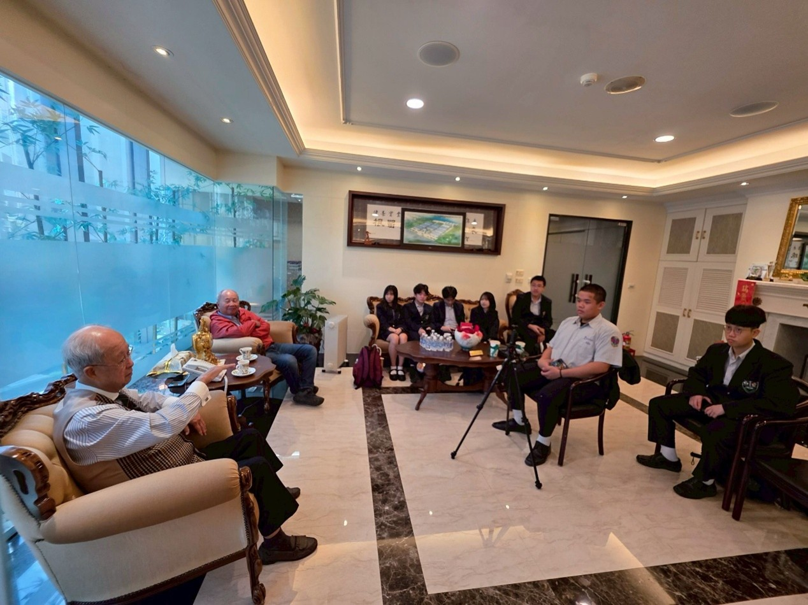